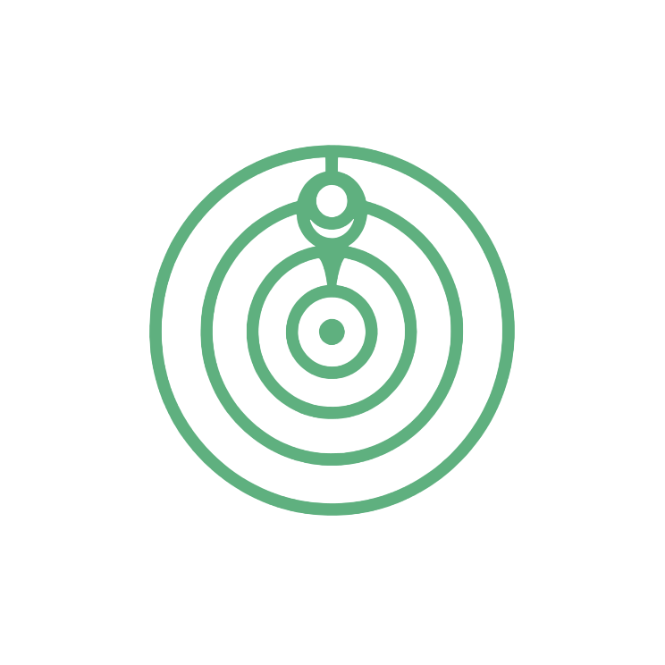
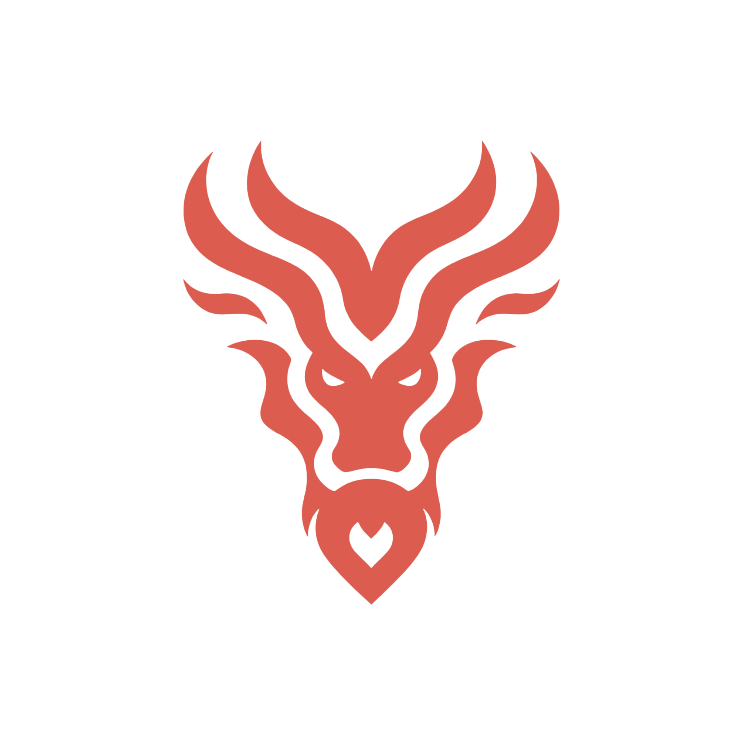

Originals · The Right-Handed God
The Four Tribes
Deep in the Borneo rainforest, beneath a vault of stone, sunlight enters from the south alone, so the valley is bright at one end and dim at the other: the Yaonan live in the most light, the Shuoying in the least. The four tribes have lived in this sealed basin for “a thousand years and more”, each watching the others.
Share of the valley (approx.)
- Tesi about 60%
- Lage about 20%
- Yaonan about 14%
- Shuoying about 7%
Philosophy
- What the Tesi revere is strength of spirit, which hardly shows in peacetime but in war binds a whole people into one, so that morale does not break.
- Words count for more than images. The ancients of the valley “carved no likenesses, only words”; Tesi script descends in an unbroken line from that writing.
- Order and lineage go together: a chief can be removed only by the full council of elders.

The Tesi
The west and the middle · the largest territory
Broken rock, red cliffs and river valleys
Traits
- Proud, careful of rank and face. With strangers they are not hostile: passers-by simply nod.
- Hereditary chiefs rule. Feathers mark rank: the topmost plume is worn only by the chief and the foremost commanders.
- Heavy infantry, spears and great shields, and a frontier hundreds of miles long.
- Hemp cloth dyed with dense geometric patterns, and a love of long feathers.
Philosophy
- Live by the wild. Outsiders sum the Lage up in one phrase: they “follow the wild — the strong eat the weak”. Strength earns rank.
- Rider and beast are not master and servant. Once Two Hearts, One Soul has taken hold, when a spirit beast dies its human partner suffers a “soul-split”.
- Strict custom: to marry a Tesi takes a ceremony, to live among them the elders’ leave; “even which side of the hearth you sit on is laid down”.

The Lage
The east · about a fifth
A sea of forest and tree-houses
Traits
- Fierce and warlike. Hand to hand, no one in the valley can stand against them.
- Four beast armies, one for each of the Beast King’s children: the Lion Army, the Night Panther Army, the Cunning Fox Army and the Elephant Army.
- “The panthers raid, the lions attack, the foxes scheme, the elephants hold.”
- For war: faces painted red and black, and armour of hide.
Philosophy
- See the whole; weigh what may come. The Yaonan read the whole from its smallest signs and the future from the present.
- One wound, every wound. In battle the pain of a fallen comrade travels along the mind-link and is shared by every fighter joined to it.
- To hold, not to take. Plainness: no carving, no ornament.
The Yaonan
The south-east · a long plain
Grass sea and settlements under the ground
Traits
- Quiet, restrained; pride wrapped in modest words.
- They break into small bands and harry the enemy, striking from the natural caves and tunnels under the plain.
- Rattan shields and walls of heavy shields.
- Grey robes, with dark-grey scarves wound over nose and mouth; homes stacked from grey-white basalt, with none of the carved wood the Tesi love.
Philosophy
- They do not fight to win; they fight to avoid being broken, a people who “seek no quarrel and are content to hold what they have”.
- Reason, with love above it. Partners walk the same rope: “trust is a romantic vow and also a practice of placing your life in another’s hands.”
- Everything to hand is a weapon: “Any ordinary thing, in their hands, can become deadly.”

The Shuoying
The far north · the smallest tribe
Rope-nets and a purple-bamboo frontier
Traits
- Sparing with words and cool-headed.
- Life is lived on rope: “Shuoying children climb rope as soon as they can walk. At three they can stand on it, at five they can run on it.”
- Nine thousand of the Iron Army hold the heights so well that even the main Lage host cannot force them. Blowpipes, slings, flying ropes.
- Knee-length robes stitched from supple vine and polished bamboo slats (“bamboo armour”); deep ink-purple robes for the chief and her people.
How they break one another
Each tribe has one it cannot easily face, and one that cannot easily face it.
the Shuoying- The Lage break the TesiBoth fight at close quarters, and there the beast armies are the stronger and the faster.
- The Tesi break the YaonanThe weight of the Tesi spirit dulls Yaonan intuition.
- The Yaonan break the ShuoyingYaonan intuition sees through the traps and ambushes the Shuoying lay out of the land itself.
- The Shuoying break the LageFamous for stopping an enemy a hundred paces out, they leave the hammer of the beast armies nothing to reach.
“That is only how they break one another. To make one another, two tribes must set aside their quarrel and work as one.”